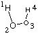
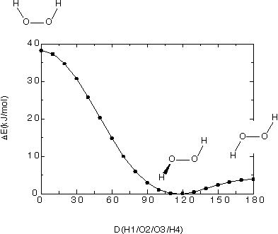
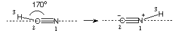
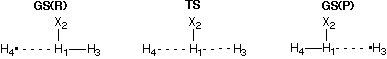
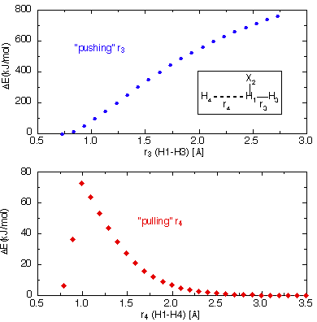
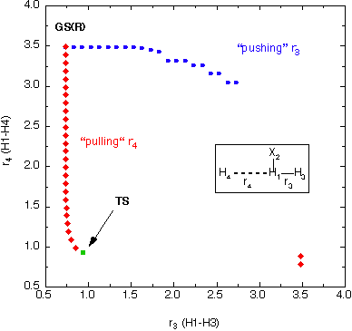

Scanning Potential Energy Surfaces
Transition states can be localized in many cases through scanning one structural
degree of freedom. This will, of course, only be successful if the reaction pathway can
be described by essentially ONE structural parameter. In order to cover the
relevant part of a potential energy surface, a series of calculations must be performed
in which one of the structural parameters is fixed to a certain value, while all
other parameters are optimized to their most favorable values. This
relaxed potential energy surface scan can be performed automatically
in either a Z-Matrix or redundant internal coordinate system. Both options will be
illustrated using the rotational transition state in hydrogen peroxide (H-O-O-H) as
an example:
1) Coordinate Driving in Internal Coordinates
The following is a Z-Matrix describing the hydrogen peroxide molecule together
with its structural variables:
#P HF/6-31G(d) opt=Z-Matrix
H2O2 rotational potential 0. to 180., HF/6-31G(d) level
first step at d4=0.0
0 1
H1
O2 1 r2
O3 2 r3 1 a3
H4 3 r2 2 a3 1 d4
r2=1.0
r3=1.3
a3=110.
d4=0.0 F
|
| 
|
The last line of the Z-Matrix describes a value of 0.0
degrees for the H/O/O/H dihedral angle d4, the tailing
character F indicating that this variable is frozen and
not to be varied during the geometry optimization. Once the (partial) geometry
optimization has completed, a series of additional partial geometry optimizations
can be performed, fixing the H/O/O/H dihedral angle to larger and larger values.
A complete rotational potential can thus be calculated through a series of separate,
constrained geometry optimizations, varying the dihedral angle d4 from 0.0 to 180.0.
The same final result can be achieved in a single job using the following input:
#P HF/6-31G(d) opt=Z-Matrix nosymm
H2O2 rotational potential 0. to 180., HF/6-31G(d) level
internal coordinates
0 1
H1
O2 1 r2
O3 2 r3 1 a3
H4 3 r2 2 a3 1 d4
r2=1.0
r3=1.3
a3=110.
d4=0.0 S 18 +10.0
|
|
|
The last line of the Z-Matrix again describes an initial value of 0.0
degrees for the H/O/O/H dihedral angle d4 but also specifies a
Scan of 18 steps, in each of which the
dihedral angle d4 is varied by +10.0 degrees. In order to avoid
problems caused through changes in the point group along the pathway (C2v at d4=0.0,
C2 for d4=+10.0 - +170.0, C2h at d4=180.0)
the nosymm keyword has been added. The choice of internal
coordinates ensures, however, that both O-H bond distances as well as both H-O-O bond angles are
identical all along the pathway.
Gaussian performs a series of constrained optimizations, writing the results of all
of these optimizations to the standard output together with a summary of the overall results:
Summary of Optimized Potential Surface Scan
1 2 3 4 5
EIGENVALUES -- -150.75020-150.75054-150.75153-150.75305-150.75495
r2 0.94896 0.94907 0.94923 0.94948 0.94975
r3 1.40327 1.40328 1.40223 1.40043 1.39830
a3 106.69296 106.59654 106.35646 105.98433 105.53225
d4 0.00000 10.00000 20.00000 30.00000 40.00000
6 7 8 9 10
EIGENVALUES -- -150.75704-150.75910-150.76097-150.76251-150.76366
r2 0.94999 0.95014 0.95017 0.95008 0.94989
r3 1.39619 1.39440 1.39316 1.39262 1.39283
a3 105.03625 104.53256 104.04527 103.58323 103.14392
d4 50.00000 60.00000 70.00000 80.00000 90.00000
11 12 13 14 15
EIGENVALUES -- -150.76439-150.76474-150.76477-150.76457-150.76425
r2 0.94962 0.94934 0.94908 0.94887 0.94872
r3 1.39376 1.39528 1.39721 1.39932 1.40138
a3 102.72086 102.31073 101.91674 101.54825 101.21876
d4 100.00000 110.00000 120.00000 130.00000 140.00000
16 17 18 19
EIGENVALUES -- -150.76389-150.76357-150.76336-150.76328
r2 0.94863 0.94859 0.94857 0.94857
r3 1.40320 1.40461 1.40549 1.40549
a3 100.94334 100.73592 100.60734 100.60734
d4 150.00000 160.00000 170.00000 180.00000
Largest change from initial coordinates is atom 4 1.554 Angstoms.
In this particular case the energetically most favorable structure is the one
at 120.0 degrees with an energy of -150.76477 Hartree. The structure at
180.0 degrees is only slightly less favorable at -150.76328 (+3.9 kJ/mol), while
the structure at 0.0 degrees is substantially less favorable at -150.75020 Hartree (+38.3 kJ/mol).
Given the symmetry of the molecule, the structures at 0.0 and 180.0 degrees are therefore transition
states with respect to rotation around the central O-O bond. The following
figure gives an overview over this part of the potential energy surface:

2) Coordinate Driving in Redundant Internal Coordinates
The Z-Matrix used in the previous input file for internal coordinates can also be used
for the redundant internal coordinate definition. All that is required to perform constrained
geometry optimizations in redundant internals is the modification of the
opt keyword:
#P HF/6-31G(d) opt=ModRed
H2O2 rotational potential 0. to 180., HF/6-31G(d) level
redundant internals, structure at d4=0.0
0 1
H1
O2 1 r2
O3 2 r3 1 a3
H4 3 r2 2 a3 1 d4
r2=1.0
r3=1.3
a3=110.
d4=0.0
1 2 3 4 0.0 F
The modified keyword opt=ModRed leads the program to read
additional input after specification of the structure of the system. This information
is given on separate lines, one constraint per line. In the current example the dihedral
angle specified through the centers 1, 2, 3, and 4 is set to 0.0 degrees and frozen to
this value during the geometry optimization. That the dihedral angle defined through
atoms 1/2/3/4 is indeed constrained to one value is visible in the list of redundant
internal coordinates at the beginning of the output file:
----------------------------
! Initial Parameters !
! (Angstroms and Degrees) !
-------------------------- --------------------------
! Name Definition Value Derivative Info. !
--------------------------------------------------------------------------------
! R1 R(1,2) 1.0 estimate D2E/DX2 !
! R2 R(2,3) 1.3 estimate D2E/DX2 !
! R3 R(3,4) 1.0 estimate D2E/DX2 !
! A1 A(1,2,3) 110.0 estimate D2E/DX2 !
! A2 A(2,3,4) 110.0 estimate D2E/DX2 !
! D1 D(1,2,3,4) 0.0 Frozen !
--------------------------------------------------------------------------------
As in the Z-Matrix example before, a complete rotational potential can be constructed by
performing a series of constrained optimizations with different values for dihedral
angle 1/2/3/4. A complete relaxed rotational potential can be calculated in redundant internals
in one calculation using the following input:
#P HF/6-31G(d) opt=AddRed nosymm
H2O2 rotational potential 0. to 180., HF/6-31G(d) level
redundant internals
0 1
H1
O2 1 r2
O3 2 r3 1 a3
H4 3 r2 2 a3 1 d4
r2=1.0
r3=1.3
a3=110.
d4=0.0
1 2 3 4 0.0 S 18 +10.0
The keyword options opt=AddRed and
opt=ModRed produce identical results and are synonymous.
The calculations performed in this case are very similar to those performed before
in the internal coordinate system. That the dihedral angle defined through atoms 1/2/3/4
will be scanned is visible in the list of redundant internal coordinates
at the beginning of the output file:
----------------------------
! Initial Parameters !
! (Angstroms and Degrees) !
-------------------------- --------------------------
! Name Definition Value Derivative Info. !
--------------------------------------------------------------------------------
! R1 R(1,2) 1.0 estimate D2E/DX2 !
! R2 R(2,3) 1.3 estimate D2E/DX2 !
! R3 R(3,4) 1.0 estimate D2E/DX2 !
! A1 A(1,2,3) 110.0 estimate D2E/DX2 !
! A2 A(2,3,4) 110.0 estimate D2E/DX2 !
! D1 D(1,2,3,4) 0.0 Scan !
--------------------------------------------------------------------------------
Again a summary of the potential energy surface scan is given at the end of the output
file containing all geometrical parameters as well as the energy for each of the optimized
points.
3) Driving a Bond Angle to Study Hydrogen Migration
Driving a bond angle can also be used to study the potential energy surface of reactions, the
isomerization of HCN to CNH being a nice example.
An input file for studying this system in internal coordinates at the HF/6-31G(d) level of theory is:
#P HF/6-31G(d) opt=Z-Matrix
HCN to CNH isomerization pathway, HF/6-31G(d)
0 1
N1
C2 1 r2
H3 2 r3 1 a3
r2=1.2
r3=1.1
a3=170.0 S 16 -10.0
|
| 
|
The scan starts in this case at 170.0 degrees in order to avoid problems related to the
linear arrangement of atoms and the higher symmetry of the reactant and product structures
at a3=180.0 and 0.0 degrees. For the same reason the scan only covers 17 steps (including
the starting structure) and ends at a final value of a3=10.0 degrees.
With the input file listed above the final summary provided by Gaussian is:
Summary of Optimized Potential Surface Scan
1 2 3 4 5
EIGENVALUES -- -92.87387 -92.86994 -92.86356 -92.85492 -92.84430
r2 1.13299 1.13427 1.13656 1.13974 1.14389
r3 1.05931 1.06020 1.06201 1.06478 1.06896
a3 170.00000 160.00000 150.00000 140.00000 130.00000
6 7 8 9 10
EIGENVALUES -- -92.83218 -92.81932 -92.80700 -92.79716 -92.79218
r2 1.14912 1.15491 1.16076 1.16562 1.16868
r3 1.07517 1.08410 1.09711 1.11650 1.14549
a3 120.00000 110.00000 100.00000 90.00000 80.00000
11 12 13 14 15
EIGENVALUES -- -92.79398 -92.80213 -92.81317 -92.82513 -92.83728
r2 1.17021 1.17303 1.17840 1.18177 1.17707
r3 1.19050 1.26788 1.41607 1.63724 1.85070
a3 70.00000 60.00000 50.00000 40.00000 30.00000
16 17
EIGENVALUES -- -92.84706 -92.85322
r2 1.16672 1.15763
r3 2.01158 2.10773
a3 20.00000 10.00000
According to the energies listed in this summary the transition state for this rearrangement is
located at a bond angle of around 80.0 degrees. In order to pin down the location of the transition
state more precisely, a second scan should be performed in which the bond angle a3 is varied between
90.0 and 70.0 degrees in smaller step sizes (such as 2.0 degrees). In this way one can locate
the transition state to +/- 2.0 degrees. A more precise localization of the transition state structure
must, however, rely on a gradient optimization algorithm.
4) Driving a Bond Distance to Study Hydrogen Exchange Reactions
Driving a bond distance is one possibility to study reactions in which bonds are
broken. The bonds chosen for stepwise variation are obviously those that participate
in the bond breaking and making processes. As there is usually more than one bond
that breaks during a reaction, selecting the one that is most descriptive of the
reaction coordinate is not always straight forward. The example chosen here to illustrate
the situation is the identity reaction of hydrogen radical H with
molecular hydrogen H2. Using an internal coordinate system and restricting the
overall system to be linear (for the relevant part of the PES this is not much of
a simplification) there are only two geometrical variables r3 and
r4 left decribing the distances between the central hydrogen atom and
the two outer hydrogen atoms:

Optimization of both distance variables at the HF/6-31G(d) level of theory leads to
localization of a ground state
reactant complex GS(R) with r3=72.9971 pm and r4=349.1454 pm.
From this stationary point an attempt can be made to find the transition state for the
exchange reaction through either stretching the short bond described by r3
or by shrinking the long bond described by r4 to shorter distances. While
one could imagine these two options to be more or less equivalent in
an identity reaction, we will see in the following that this is not so.
Choosing r3 as our scanning variable and selecting larger and
larger values for this variable starting from the optimized value of r3=72.991 pm
corresponds to pushing the covalent bond between
H1 and H3 apart. An input file for scanning this variable
to r3=272.991 pm in 20 steps can be found here.
The result of this effort is presented in the upper part of following figure. It
can clearly be seen that elongation of the bond connecting H1 and
H3 leads to a continous increase in energy. The magnitude of the
energy increase is far larger than expected for a radical substitution reaction
and reaches values at r3=270 pm that are far greater than those for typical
bond cleavage processes (here > 700 kJ/mol). Even though this simple system poses
quite some problems for a number of theoretical methods (for an overview see
E. Proyonv, H. Chermette, D. R. Salahub, J. Chem. Phys. 2000, 113, 10013),
energies exceeding the experimentally measured reaction barrier of 40.6 kJ/mol (300K)
by more than a factor of two may indicate that we are not heading for the transition
state region in this type of scan.

Choosing r4 as the scanning variable and selecting smaller and
smaller values for this variable starting from the optimized value of r3=349.1454 pm
corresponds to pulling the covalent bond between
H1 and H4 together. An input file for scanning this variable
to r4=79.1454 pm in 27 steps can be found here.
The result of this scan is featured in the lower part of the figure above. Aproaching
from larger distances the energy now rises much more slowly until reaching a maximum
at about 100 pm and just over 70 kJ/mol. Further contraction of r4 leads to
a sudden decrease in energy suggesting a discontinous or at least very irregularly
shaped potential energy surface. Despite the fact that the energies are much more
reasonable in this second scan, it is not clear whether the energy maximum now corresponds
to a true transition state.
How can the results obtained in both scans be rationalized?
Plotting the bond distances r3 and r4 against each other
gives a better view of the relevant part of the potential energy surface. The following
figure represents a birds eye view of the PES and also contains the true transition
state for the hydrogen exchange reaction at r3 = r4 = 93.4598 pm
and an energy of +75 kJ/mol relative to the reactant complex.

We can now see that pulling in r4 is a well chosen scanning coordinate
directly aiming at the transition state in terms of its structure as well as its
energy, and that it is only after passing beyond the transition state region that
r4 is not a good description of the reaction pathway anymore. Pushing
apart r3, on the other hand, represents the wrong direction right from
the start and effectively ruptures the existing H-H bond without forming a new one.
last changes: 16.10.2004, HZ
questions & comments to: zipse@cup.uni-muenchen.de